Atari Retro 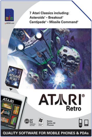 Atari Retro CardBjork: All Is Full of Love 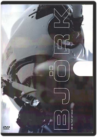 Studio: Wea-des Moines Video Release Date: 04/03/2001Kiss Kiss Bang Bang  Linkin Park: Breaking the Habit  Linkin Park: Minutes to Midnight  Tori Amos: Welcome to Sunny Florida Studio: Sony Music Release Date: 05/25/2004 Rating: NrCrazy Taxi "Sega of America, Inc."If you think it's hard to flag down a cab in a big city, try driving one in Sega's zany straight-from-the-arcade port of Crazy Taxi. If you're one of the teeming fans who eagerly played Crazy Taxi in the arcade at a buck a pop, then this game is a must-buy, if only from a purely economic standpoint. Even those who don't know the difference between Crazy Taxi and the long-running TV series Taxi will immediately recognize the appeal of this game. In fact, this game is so impressive and addictive that it should easily convince a whole new wave of buyers to purchase a Sega Dreamcast.What's so hot about Crazy Taxi? For starters, the graphics sport the most impressive re-creation of a living city ever seen in a video game. The level of detail is astounding and never ceases to surprise the player as block after unique block speeds by. The city is a distilled version of San Francisco with some landmarks and neighborhoods left intact. Making it seem all the more real are apparent product placements of real-world retail locations such as KFC, Tower Records, and Pizza Hut. And just about everything you see on the screen is interactive: boxes, phone booths, and mailboxes topple when bumped or smashed, pedestrians leap and tumble out of your path, and the myriad of traffic attempts to avoid your erratic high-speed antics. While some driving games brag about a lack of boundaries, this one delivers—players drive on the ocean floor, off the second floor of a parking garage, through parks, and down stairs. A helpful hovering arrow points drivers in the correct direction, but you can truly drive wherever you want at any time, making for tons of replay value. While the game is a direct port from the arcade game of the same name, there's plenty more depth in the home version. In addition to the city that appears in the coin-op version, the Dreamcast version also includes an entirely new city. Crazy Taxi includes a trunk-load of mini-games that help to teach drivers how to perform the special speed boosts and maneuvers in the game. Though this game would be plenty exciting without any sounds at all, it has an adrenaline-pumping soundtrack supplied by punk crossover bands the Offspring and Bad Religion, as well as some good, if sometimes monotonous, dialogue between the driver and the passengers. —Jeff Young Pros:Wonderful, realistic graphicsEasy to get into, and full of many long hours of addictive playEven more to offer than the fantastic arcade game upon which this is basedCons:On very few occasions players will encounter some graphic slowdown Sega GT  Usually, racing games can get pretty tiring, but Sega GT will hold most players, mainly because there are so many licenses you can earn from the auto manufacturers in the game, including Mazda, Suzuki, and other mostly Japanese auto makers. One of the coolest features here allows you to create a car from scratch and then see how it stacks up on the track—chances are your first design won't do well. A little more reflection and other effects would have better integrated the cars with their surroundings, and some star-studded songs sure would have been preferable to the game's generic soundtrack. —Robb Guido Pros: Much more absorbing than the average racing gameSlick graphics will make players droolCons:Generic soundtrack Shenmue  The game itself is awash in small details, crammed into a confined space. The city of Yokusuka circa 1986 is rendered beautifully in a short series of neighborhoods that are long on detail even if short on variety. The story itself is ripped straight from a chopsocky flick: you portray the young hero Ryo Hazuki, whose father (a kung fu sensei, naturally) is killed before his very eyes by a mysterious and frightening villain. Ryo must uncover the identity of the killer and fight his way through the city in an effort to avenge this wrongful death. Shenmue's Yokusuka might be short on space—in total, it represents maybe a square mile—but the detail is overwhelming. You can interact with nearly every person or object that you see; 300 citizens go about their daily routines, and whom you encounter is as much determined by where you are as when you are there. Much of this interaction involves combat that ranges from Dragon's Lair-style reaction tests (such as timing a button press to dodge an oncoming car) to freeform kung fu fighting. Further, each second of real time equals about a minute of game time, and Ryo has to be home by 11 p.m. each evening. The game moves at a brisk pace, and each challenge or battle feels like a race against time. Some might say that gaming doesn't get shallo Soccer Slam  The game is similar in style to Virtua Tennis in concept, though a lot less serious. Modes of play are standard: arcade, tournament, quest, etc. Play out the quest mode and the similarity to the aforementioned tennis title is clear. You select one of six preset teams based on continent and elemental power. Fire, water, toxic, spirit, electric, and ice form the special powers that each team can unleash on the pitch. Teams are taken on in a round-robin style league with a special challenge offered to you after each match. The challenges are fun and in the style of Virtua Tennis—complete each one and you’ll be given cash to spend in the shop, where you can purchase kit upgrades, new grounds, game artwork, and more. Win the leagues and you'll be able to unlock extra hidden teams. Other game modes allow you to create a personalized super team and unlock more characters. The game's graphics are excellent and each player is instantly recognizable with great animations and detail. The stadiums are well animated and the sound effects are vibrant. The game oozes Sega quality. All in all, Sega Soccer Slam is ideal for those less serious sessions and for pick-up-and-play gaming. —Laurent S. Hall The Elder Scrolls IV: Oblivion 2K GamesElder Scrolls IV: Oblivion is single-player role-playing action in the world of the popular Elder Scrolls game. The Emperor of Tamriel has been assassinated and the killer still runs loose. Meanwhile, no heir sits on the throne. With no Emperor upon the throne, the gates of Oblivion open wide and demons invade. Your quest is to find the lost heir and place him on the throne, before demons destroy the land. Next-generation graphics with pixel-shader effects for high-definition TVs, creating lifelike towns & dungeons and the most realistic forestsExtreme G3  Turok: Evolution 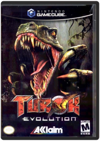 Acclaim Entertainment Inc.Fourth (numbered) installment in the comic-based FPS series explores the story of how original Turok Tal'Set became the man he is. White fighting his nemesis Captain Tobias Bruckner in 1886 Texas, the two fall into a rift between their world and the Lost Lands, a mysterious place full of civil upheaval and much danger. Thus the adventure of Turok: Evolution begins as Tal'Set continues to seek revenge on the wicked Bruckner in the middle of the tumultuous world. Players run, jump, climb, swim or sneak through the levels, blowing away prehistoric foes with an all-new arsenal of weapons, including Variable Payload Cruise Missiles, Gravity Disrupter Beams, and the Swarm Bore.Worms 3D  Doom 3  Spider-Man  Spider-Man 2  Tony Hawk Pro Skater 4  Tony Hawk's Downhill Jam  Tony Hawk's Underground  Tony Hawks' Pro Skater 3 Activision Inc.Skate through realistic urban settings all over the world, avoiding pedestrians, cars, traffic accidents, natural disasters and weather hazards.True Crime: New York City  True Crime: Streets of LA  Moby: Play 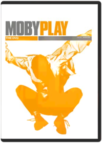 Jonas Åkerlund, Moby, David LaChapelle, Fredrik Bond, Mike MillsThis, the perfect companion piece to the multi-platinum CD Play, highlights Moby as not just an artist and musician, but a personality. Includes 10 music videos for 7 songs, 20 minutes of live footage from "Later with Jools Holland," Moby's 90-minute "Megamix" (the best of the "Play" remixes set to original, incredible visuals) and his hilarious 20-minute home movie "Give an Idiot a Camcorder." Videos: Bodyrock (U.K. auditions), Honey, Find My Baby, Porcelain (U.K. version), Natural Blues, Bodyrock (U.K. version), Run On, Why Does My Heart Feel So Bad, Natural Blues (animated), Porcelain. Live: Natural Blues, Porcelain, Go, New Dawn Fades (If We Can), Machete, Hymn, Everloving, Porcelain (acoustic). DVD-ROM feature: Re-mix 2 Moby songsTrauma Center: Second Opinion  Linkin Park: Frat Party at the Pankake Festival  1. Intro 2. Papercut 3. Beginnings 4. Points Of Authority 5. The Live Show 6. Crawling Video Shoot 7. Crawling 8. Touring 9. Cure For The Itch 10. The Band 11. One Step Closer 12. The Future 13. In The End 14. End Auto Modellista  Capcom vs SNK 2 EO CapcomCapcom VS SNK 2 is composed almost entirely of classic Street Fighter and SNK fighting techniques, which means lots of charge moves, half and quarter circles, and super moves. What's new to the game are the different "grooves," or fighting styles. Although the "Capcom" and "SNK" grooves were introduced in a previous game, Capcom VS SNK 2 takes this concept a step further by introducing six different grooves: C, A, P, S, N, and K. Depending on which groove you choose, the type and number of fighting techniques you have available changes, with half of the grooves leaning towards traditional Capcom fighting and the other half leaning towards SNK-styled battle. The difference between the two fighting styles is mainly the availability of certain non-lethal moves such as air blocks, dodging, and rolling, with each groove having its own balanced mixture of the said moves.Maximo Ghosts To Glory  Mega Man Anniversary Collection  P.N.03  Resident Evil 4  Viewtiful Joe CapcomFighting action game from Capcom Studio 4's Atsushi Inaba. Joe was just your average, well, Joe until he was transported into his favorite action movie. In his new environment, Joe discovers he has all the abilities of Hollywood action-hero. Using new cel-shading techniques, VJ boasts a unique visual style that blends colorful 3D environments with a twisted take on traditional 2D gameplay. Joe's power stems from skillful martial arts attacks, high-flying acrobatics, and time-bending special effects. Players can slow down or speed up time when attacking/ dodging enemies, as well as zoom in on the action to execute different attacks.Second Sight  Fable  Time Splitters 2  Def Jam Vendetta  Knockout Kings  Need for Speed Underground Electronic ArtsIn Need For Speed: Underground, you'll enter the world of urban street racing and work your way up the underground rankings! 4-player action for faster, wilder racing thrills!Need for Speed Underground 2  Need for Speed: Hot Pursuit 2  SimCity 4 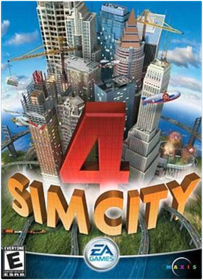 Electronic ArtsIn SimCity 4, you don't just build your city, you breathe life into it. Sculpt mountains, gouge riverbeds, and seed forests to lay the groundwork for your creation. Then construct the most realistic metropolis you can imagine. Your city comes alive with the hustle and bustle of construction crews, the snarl of traffic, and the activity of your Sims. Move your personalized Sims into your city and watch as they go about their daily lives. Build mansions on mountainsides, raise skyscrapers downtown, and build transportation networks to form a massive region of SimCities that share and compete for resources. With every decision you make, your city and your Sims will respond for better or worse. In SimCity 4, your city pulses with the life you give it.The Sims 2 Electronic ArtsThe Sims 2 is an incredible sequel to the best-selling PC game of all-time! You'll get to direct an entire Sims' lifetime, and try to get them to reach their goals in life. Will they have a long, successful and happy life - or will they end up poor and heartbroken? Special DVD with bonus content - Interview with the game designers(where they offer game tips), tips on making your own films with Sims 2, screenshots, deleted scenes and more!The Sims 3 Electronic ArtsThe Sims 3 lets you immerse truly unique Sims in an open, living neighborhood just outside their door! The freedom of The Sims 3 will inspire you with endless possibilities and amuse you with unexpected moments of surprise and mischief. Your Sims can roam throughout their neighborhood, visit neighbors’ homes, and explore the surroundings. They can stroll downtown to hang out with friends, meet someone new at the park, or run into colleagues on the street. If your Sims are in the right place at the right time, who knows what might happen?! New easy-to-use design tools allow for unlimited customization to make truly individual Sims. Determine your Sims’ shape and size, from thin to full-figured to muscular—and everything in between! Choose your Sims’ facial features, their exact skin tone, hair eye shape and color and select their clothing and accessories. Create realistic Sims with distinctive personalities. Select from dozens of personality traits and combine them in fun ways. The combination of traits you choose—brave, artistic, loner, perfectionist, klepto, romantic, clumsy, paranoid, and much, much more—help shape the behavior of your Sims and how they interact with other Sims. Your Sims can now rise above their basic set of every day needs. They are complex individuals with unique personalities. Build your dream house or design the ultimate home. Customize everything from floors to flowers, shirts to sofas, wallpaper to window shades. It’s fun and easy to change colors and patterns giving you endless personalization options. Or you can populate your Sims’ neighborhood with pre-designed buildings and furnishings. Which of your Sims will live in high-end mansions, cool bachelor pads, ultimate dream homes or low-cost cottages?TimeSplitters: Future Perfect  Pearl Jam: Touring Band 2000 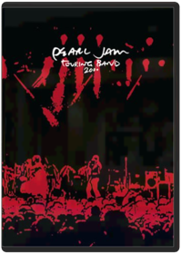 Steve GordonThe first Pearl Jam full-length DVD features three hours of live and montage footage from the band's 2000 U.S. and European tours. The main body of the DVD program is comprised of 28 full song performances filmed in various cities on the band's 2000 48-city U.S. tour, reflecting the time and composition of an actual concert set list. The DVD was filmed by Pearl Jam crew members Liz Burns, Steve Gordon, and Kevin Shuss without directors or producers. An additional 50 minutes of special bonus features includes footage from the band's 2000 European tour, backstage footage, previously unreleased music, special consumer-chosen camera angles, the previously unreleased video for "Oceans," and more. Edited by Steve Gordon. Recorded and mixed by Brett Eliason and engineered by John Burton.Track list: Long Road, Corduroy, Grievance, Animal, Gods' Dice, Evacuation, Given to Fly, Dissident, Nothing as It Seems, Evenflow, Lukin, Not for You, Daughter (into "It's OK" by Dead Moon), Untitled, MFC, Thin Air, Leatherman, Betterman, Nothingman, Insignificance, I Got Shit, RVM, Wishlist, Jeremy, Evolution, Don't Go, Parting Ways, Rocking in the Free World Special bonus features: Stationary "Matt-cam" footage is available with a heavier percussion mix for two of the songs featured on the main body of the DVD: "Evacuation" and "Even Flow" and also for "In My Tree." (The "Matt-cam" is a special camera positioned behind drummer Matt Cameron that the consumer can switch to while viewing the DVD.) European montages: City, band, and fan montages from the European tour with "Yellow Ledbetter" live and previously unreleased instrumentals recorded by Pearl Jam during early Binaural sessions. Instrumentals titled: "Thunderclap," "Foldback," and "Harmony." Outtakes of band on U.S. tour, set to the song "Smile" "Do the Evolution" video—animated by Todd McFarlane "Oceans" video—never before released in the U.S. directed by Josh Taft Gran Turismo The Hobby Spot11 Highly Detailed Tracks. 140 Authentic Sports Cars. Rated "E" for Everyone.Peter Pan  Expendable 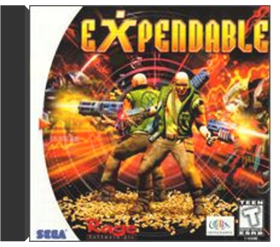 InfogramesFans of the old arcade hit Smash TV will most likely enjoy Expendable. The rest of us may want to look elsewhere. While the game boasts impressive graphics and really shows off the lighting and color abilities of the Dreamcast, repetitive single-player gameplay quickly leads to boredom.You control an expendable clone soldier from a third-person perspective. The game is divided into missions, each mission having roughly the same goal: blow everything up and run to the end as fast as possible. Along the way, you fight hordes of mindless aliens, rescue hostages, and play with your choice of 18 powerful weapons. If you have an additional controller, a friend can join in the mayhem. The game saves your progress with the optional Visual Memory Unit and also makes use of the optional Jump Pack, which vibrates to indicate hits and explosions. While Expendable won't win any awards for creativity, depth, or longevity, sometimes you just want to team up with a buddy and kick alien butt. For those times, Expendable does just fine. —Michael Fehlauer Pros:Brilliant graphicsChaotic, rampaging two-player cooperative playOver-the-top weaponsCons:Mindless "run and gun" gameplayRepetitive single-player game Hunter: The Reckoning  Vampire Hunter D: Bloodlust 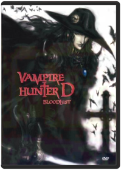 Yoshiaki KawajiriStudio: Urban Vision Release Date: 02/12/2002Blood: The Last Vampire  Metal Gear Solid: The Twin Snakes KonamiIn Metal Gear Solid: The Twin Snakes, superspy Solid Snake infiltrates the GameCube for one of the most games ever! Twin Snakes is a complete remake of the legendary Metal Gear Solid, with updated graphics for better, smoother gaming. Prepare to save the world, in the game that launched a classic series and started the spy gaming genre!Star Wars Knights of the Old Republic LucasArtsProduct InformationStar Wars: Knights of the Old Republic takes you into the distant past of the Star Wars universe — over 4000 years before Episode I when battles raged between the Jedi and the Sith!Product FeaturesA massive conflict between Jedi & Sith has left the Republic weakened. Into this chaos steps a young Jedi on a mission. His mission will determine the outcome of this colossal galactic war - and your destiny as a JediLead your group of freedom fighters across the galaxy — you can choose from humans droids Twi'leks Wookies and moreRecruit other to your cause & train them in exciting mini-games like racing swoop bikes or manning turret gunsTravel to ten unique world in the Star Wars galaxy from the Jedi Academy on Dantooine to the Sith homeworld of KorribanCustomizable and evolving characters keep the story fresh and the gameplay interesting — especially when you have to choose between the Light & Dark Sides of The ForceStar Wars: Bounty Hunter 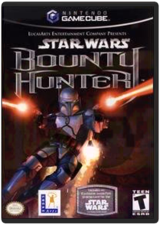 LucasArtsThrough Jango Fett—father of Boba Fett—players will plunge into the dark, deadly world of a bounty hunter. Inspired by events between Episode I and Episode II, Star Wars: Bounty Hunter presents an original, compelling, third-person action experience that establishes Jango Fett's place in the Star Wars galaxy and his connection to the notorious Clone Army. The game draws players into Jango Fett's sinister and seedy world, where thieves and assassins thrive. Using his cunning and a host of deadly skills, Jango Fett ventures into the rarely explored dark side of the Star Wars universe to track down the elusive leader of a mysterious and deadly cult. All the while, he'll compete against a brutal rival from his past in a quest to capture the ultimate bounty, dead or alive.Gameplay emphasizes intense combat and physical action in the relentless pursuit of prey across six fantastic worlds and 18 levels. Jango Fett faces off against an onslaught of the worst scum in the universe, including crime lords, corrupt politicians, and enemies of various species. He is equipped with an arsenal of powerful weapons such as dual blaster pistols, a flamethrower, missiles, and a distinctive jet pack. Star Wars: The Clone Wars 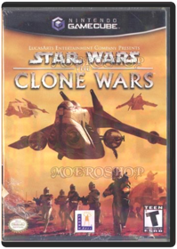 LucasArtsStar Wars: Clone Wars send you into the vicious battles of the Clone Wars, between Episodes II and III! Incredible graphics make you feel the every Laser blast, piece of debris, and atmospheric effect Engage in all-out intergalactic war with up to four players Full Sound and Video experience with Dolby Pro Logic II Surround sound and a 16 - 9 enhanced widescreen mode Put yourself into the legend of Star Wars with this exciting new game!Vampire Hunter D  Black & Bruised 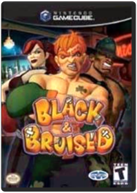 Majesco Sales Inc.MODEL- 01295 VENDOR- MAJESCO SALES FEATURES- Black and Bruised To these guys boxings no game. Its a matter of survival. Nineteen outrageous characters fight their way through grueling over-the-top slugfests to win fame fortune or respect. Play through their intertwining lives as they literally beat each other Black&Bruised!ESRB Rating : EveryoneGenre/Category : FightingSystem : Nintendo GamecubeNumber of Players : 2 Compatible Peripherals: MANUFACTURER WARRANTY: 90 DAYSBlowout  Sega Sports NBA 2K3  Linkin Park: Live in Texas  Gauntlet: Dark Legacy  Midway Arcade Treasures  Midway Arcade Treasures 2 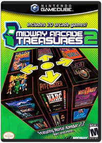 Midway EntertainmentMidway Arcade Treasures 2 brings together the hit games of the arcade, and delivers them to your Xbox! Great gaming and classic action combine in one collection. Play robot football in Cyberball 2072, race F-1 cars in Championship Sprint and go one-on-one on the ball courts with Arch RivalsMortal Kombat Armageddon  Mortal Kombat: Deadly Alliance 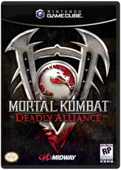 Midway EntertainmentMortal Kombat: Deadly Alliance takes you deeper into the Outworld with all-new matches, as you face the deadliest fighters on(or outside) Earth!Mortal Kombat: Deception 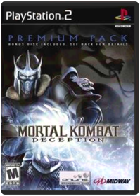 Midway EntertainmentAn ancient Evil has returned from beyond death and threatens the very existence of the realms. Will the champion of the Elder Gods have the power to defeat this threat borne of deception? Designed for gameplay on Sony Playstation 2 systems.Mortal Kombat: Shaolin Monks  Get a Life: Volume 1  The two episodes on Volume 1 exemplify what Get a Life was all about: a straight-faced spoof of sitcom conventions that managed to avoid all of the conventions that spoofs usually observe. That it wasn't laugh-out-loud funny is beside the point; Elliott's fans know that his brand of humor is often diametrically opposed to conventional humor. Though the plots are fairly conventional—in "The Prettiest Week of My Life," Peterson enrolls in the Handsome Boy Modeling School, where he competes with another student, Sapphire; "Bored Straight" finds Peterson trying to rehabilitate a gang of teens—the shows themselves are anything but. —Randy Silver R: Racing Evolution  Tekken 4 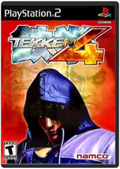 NamcoThe King of Iron Fist tournament returns! Set two years after the events of Tekken 3, Heihachi is trying to splice DNA from True Ogre into his own genome. It doesn't work, though — he's missing the "Devil Gene" required to complete the task successfully. Of course, he knows just who has it — Jin! However, things are complicated by the apparent resurrection of Heihachi's murdered son, Kazuya. Amidst this background of turmoil and intrigue, the new tournament begins.Tekken 5 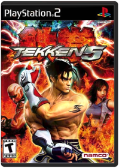 NamcoTen years after the First TEKKEN redifined the console fighting scene, the legendery King of Iron first Tournament returns to dominate the genre all over again.Marilyn Manson: Demystifying the Devil  Battalion Wars NintendoBattalion Wars GcubeCustom Robo  Excite Truck  Geist  The Legend of Zelda: The Wind Waker  Mario Golf: Toadstool Tour  Mario Kart 8  Driving up a waterfall or across the ceiling can provide an intense adrenaline rush, but that's not all anti-gravity is good for. It also provides a wild new gameplay mechanic: if you collide into other racers in zero-g, you'll earn speed boosts worth bragging about. Upload and share your best moments and watch your friends' using Mario Kart TV.* Returning features include 12-player online play*, gliders, underwater racing, motorbikes, and custom karts. You can even race as Bowser's seven minions, the Koopalings. Race along walls and upside-down on twisting anti-gravity racetracksShare highlight videos of your greatest moments with friends via the Mario Kart TV feature and Miiverse*Race and battle with friends locally or connect online to play with random players from around the world*Fan favorite features from past Mario Kart games include gliders, underwater racing, motorbikes, mid-air tricks, and moreFor the first time ever, play as all seven of Bowser's minions, the KoopalingsCrisp HD graphics and fluid animation offers players a visually stunning Mario Kart * Wireless broadband Internet access required for online play. Learn more at support.nintendo.com. Start you Karts for some flippin' fun view larger Brand new item chomps at racing enemies view larger Race alongside your favorite characters view larger Race as all of Bowser's minions, the Koopalings, for the first time ever view larger Mario Kart Wii 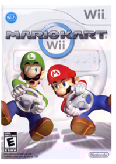 NintendoMario Kart Nintendo Wii Game Only.Mario Kart: Double Dash!! with Bonus Disc  Mario Strikers Charged  Metroid Prime 2: Echoes  Metroid Prime 3: Corruption NintendoYou ARE Samus with Wii control! By moving around with the Nunchuk and aiming Samus's gun with the Wii Remote, you'll do more than look through the eyes of Samus—you'll experience a quantum leap in first-person control. Fire on the run, grapple enemies and yank off their shields, or manipulate machinery with movements of the Nunchuk and Wii Remote—it all adds up to a level of immersion only possible on the Nintendo Wii, and the best first-person controls on any platform, period. ** Corruption is everywhere... Dark Samus, Samus's longtime nemesis, is corrupting entire planets by launching enormous seeds called Leviathans into them. Samus must travel to multiple planets—each with unique alien landscapes and dangers—to fight the corruption and track several other bounty hunters, all the while fighting the spreading Phazon that threatens to take over her body completely. As it corrupts her, it also grants her incredible powers... ** Enter Hypermode! Samus will employ a never-before-used device called a Phazon Enhancement Device (P.E.D) that harnesses the Phazon within her and puts her into a state called Hypermode. In Hypermode, Samus can destroy Phazon impediments and annihilate enemies with superpowered weapons...but it drains her health to use it, and she risks utter corruption if she doesn't empty her Phazon meter within a certain time frame. You'll need to carefully balance your need for ultimate power with the inherent danger of corruption.Pikmin 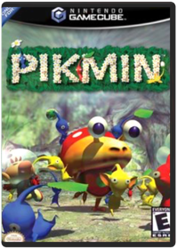 NintendoPikmin is a little ant from space, looking to get back home as fast as possible. Help him get the parts he needs to finish his repairs! Real-time action and intuitive controls combine with gorgeous cartoony graphics for a whole new gaming experience!Pokemon Box Ruby & Sapphire 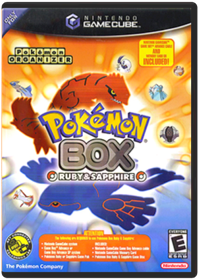 NintendoThe kit gives you a gamedisc that allows you to connect your GameBoy Advance Pokemon.Pokemon Colosseum  Pokemon Colosseum Bonus Disc 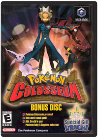 NintendoOriginally available to those that pre-ordered Pokemon Colosseum. It contains a trailer for Pokemon Colosseum (taken from the Japanese version of the game), a trailer for Jirachi Wish Maker (the new Pokemon movie), and the downloadable Pokemon, Jirachi, that works with the Game Boy Advance Ruby or Sapphire titles. In order to access the bonus Pokemon, a GBA, a copy of thew two GBA games, and a GBA/GCN link cable are required.Pokemon XD: Gale of Darkness  Wii Fit 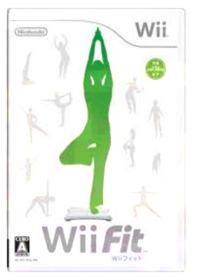 NintendoThe hit combination of Wii Sports and the Wii Remote brought golf swings and tennis serves into people's homes. Now Nintendo turns the living room into a fitness center for the whole family with Wii Fit and the Wii Balance Board. Family members will have fun getting a "core" workout, and talking about and comparing their results and progress on a new channel on the Wii Menu. Lean to block soccer balls, swivel hips to power hoop twirls or balance to hold the perfect yoga pose. As users stand on the Wii Balance Board, included with Wii Fit, their body's overall balance is tied to the game in a way they've never experienced before. Wii Fit also uses the Wii Balance Board for daily tests. These evaluate two key measures that a household can track via progress charts:Wii Fit Plus  Linkin Park: Reanimation  Ninja Scroll: Volume 1: Dragon Stone  Ninja Scroll: Volume 2: Dangerous Path  Ninja Scroll: Volume 3: Deliverance  Bully  Sega Sports NHL 2K3 Sega Of America, Inc.Realistic gameplay combined with total control over your team make Sega’s NHL 2K3 the game of choice for serious hockey fans. The game captures all the intricacies of the NHL, from the furious, hard-hitting action on the ice to the day-to-day decisions made in the front office. Don’t like the production you’re getting out of one of your players? Send him down to the minors for a few weeks of seasoning to get his game in order. Prefer high-scoring shootouts or 1-0 grind-it-out defensive struggles? Tweak the game’s highly customizable AI to set things just the way you like them. Regardless of your preferences, NHL 2K3 delivers the goods to make this a more than passable hockey sim.Like most of Sega’s recent sports releases, NHL 2K3 hangs its hat on stellar gameplay and sweet graphics. Little, if anything, is overlooked: players move and react much like their real-life counterparts—goalies are especially acrobatic; the puck seamlessly glides, flips, and bounces around the rink and off the posts and goalie’s pads; players can be pinned to the boards during a scramble for the puck; missed shots are covered up by a diving goalie or slapped in off ensuing rebounds; arenas are painstakingly re-created and feature music and sounds specific to each. Off the ice, there’s plenty of strategy and options to tinker with. NHL 2K3 boasts over 30 sliders to alter effects ranging from ice friction to referee collisions. And, of course, there’s the franchise mode that allows up to 250 years of dynasty building. —Larry White (This review refers to the PlayStation2 version of this game) Sonic Adventure 2 Battle 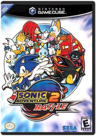 Sega Of America, Inc.Most Sonic the Hedgehog games are specifically for Sega related platforms but Sonic Adventure 2 Battle is an original game made for the Nintendo GameCube. Sonic and crew need to stop Dr. Eggman from his nasty tricks again. There's new characters brought into the Sonic universe! A mysterious dark hedgehog called Shadow and a bat named Rouge. The Sonic Adventure 2 Battle has been enhanced with graphics, doubling the framerate and now is set as a multiplayer system.Virtua Fighter 4 Evolution  Ninja Scroll  ATV Offroad Fury 2  Gran Turismo 4 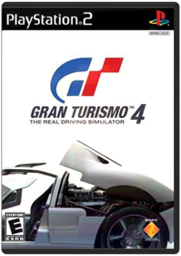 Sony Computer EntertainmentGran Turismo 4 has the enhanced racing simulations that hardcore racers crave! Whether you want to race closed circuits or specially designed city courses, you'll experience intense racing action on up to 100 tracks. Advanced behavior captures real-life racing and the unpredictability of finishesNFL 2K  NFL 2K also features a full-league fantasy draft, a tutorial mode, extensive game and season statistics, and excellent play and player creation options. Even its play-by-play and color commentary surpass other games on the market. All 31 NFL teams are included as are most of the real players, though each team does have a few generic guys with names like "Seahawks WR." Not surprisingly, some offseason transactions are not reflected in this game—namely, the Barry Sanders situation in Detroit. But he's in this game, so fire up NFL 2K and see Barry run again. Better yet, create a custom player designed to fit your style and sign him to your favorite team's roster. NFL 2K does not make any special use of the optional Visual Memory Unit, apart from saving your game and roster data. In fact, if this game has a flaw, it's that a single saved game fills up nearly an entire VMU. So if you want to save your game info in NFL 2K but don't want to save over other saved games, you will need another VMU. If you have even a passing interest in football, this is a must-buy, since it is clearly the new standard by which all future football—and other sports—video games will be judged. —Michael Ryan Pros:Outstanding lifelike graphics and player animationsExcellent play-calling interfaceEasy to learn and play, even for novicesCons:Saved games take up too much memory on VMU The Biggest Loser  Red Steel  Shaun White Snowboarding: Road Trip UBI SoftLimited Edition version has many extra features. Includes extra mountain, chalet, events and playing as Shaun White earlier. Limited Edition outer slipcase cover.Audioslave: Live in Cuba  |

Library
Collection Total:
1,475 Items
1,475 Items
Last Updated:
Nov 29, 2018
Nov 29, 2018
 Made with Delicious Library
Made with Delicious Library
Springfield, State zipflap congrotus delicious library Hendrix, Jacob